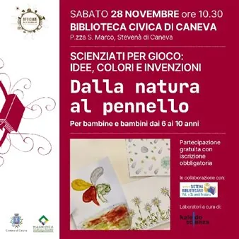

sab 28 nov · dalle 10:30
Dalla natura al pennello
Scienziati per gioco: idee, colori e invenzioni 𝗗𝗔𝗟𝗟𝗔 𝗡𝗔𝗧𝗨𝗥𝗔 𝗔𝗟 𝗣𝗘𝗡𝗡𝗘𝗟𝗟𝗢 𝗦𝗮𝗯𝗮𝘁𝗼 𝟮𝟴 𝗻𝗼𝘃𝗲𝗺𝗯𝗿𝗲 2026 ore 10:30 - 12:00 𝗕𝗶𝗯𝗹𝗶𝗼𝘁𝗲𝗰𝗮 𝗱𝗶 𝗖𝗮𝗻𝗲𝘃𝗮, Piazza San Marco, Stevenà (PN) 𝐶𝑜𝑚𝑒 𝑠𝑖 𝑑𝑖𝑠𝑒𝑔𝑛𝑎𝑣𝑎 𝑞𝑢𝑎𝑛𝑑𝑜 𝑛𝑜𝑛 𝑒𝑠𝑖𝑠𝑡𝑒𝑣𝑎𝑛𝑜 𝑝𝑒𝑛𝑛𝑎𝑟𝑒𝑙𝑙𝑖 𝑒 𝑡𝑒𝑚𝑝𝑒𝑟𝑒? Per lasciare il proprio segno, l’uomo ha da…
 Indicazioni
Indicazioni
- Costi e prenotazioni
- Costo non indicato · Prenotazione non indicata
- Programma
- Programma da verificare. Apri la fonte ufficiale per orari e possibili aggiornamenti.
- In caso di maltempo
- Nessuna indicazione specifica pubblicata.
- Note
- Acquisito automaticamente dalla fonte.
L’EVENTO
Descrizione completa
Scienziati per gioco: idee, colori e invenzioni 𝗗𝗔𝗟𝗟𝗔 𝗡𝗔𝗧𝗨𝗥𝗔 𝗔𝗟 𝗣𝗘𝗡𝗡𝗘𝗟𝗟𝗢
𝗦𝗮𝗯𝗮𝘁𝗼 𝟮𝟴 𝗻𝗼𝘃𝗲𝗺𝗯𝗿𝗲 2026
ore 10:30 - 12:00
𝗕𝗶𝗯𝗹𝗶𝗼𝘁𝗲𝗰𝗮 𝗱𝗶 𝗖𝗮𝗻𝗲𝘃𝗮, Piazza San Marco, Stevenà (PN)
𝐶𝑜𝑚𝑒 𝑠𝑖 𝑑𝑖𝑠𝑒𝑔𝑛𝑎𝑣𝑎 𝑞𝑢𝑎𝑛𝑑𝑜 𝑛𝑜𝑛 𝑒𝑠𝑖𝑠𝑡𝑒𝑣𝑎𝑛𝑜 𝑝𝑒𝑛𝑛𝑎𝑟𝑒𝑙𝑙𝑖 𝑒 𝑡𝑒𝑚𝑝𝑒𝑟𝑒?
Per lasciare il proprio segno, l’uomo ha da sempre attinto alla natura. Con ingredienti e strumenti della cucina, ci cimenteremo anche noi nella 𝗰𝗿𝗲𝗮𝘇𝗶𝗼𝗻𝗲 𝗱𝗶 𝗽𝗶𝗴𝗺𝗲𝗻𝘁𝗶 𝗻𝗮𝘁𝘂𝗿𝗮𝗹𝗶 per dare vita alle nostre opere.
Laboratori a cura di Kaleidoscienza
𝗣𝗲𝗿 𝗯𝗮𝗺𝗯𝗶𝗻𝗲 𝗲 𝗯𝗮𝗺𝗯𝗶𝗻𝗶 𝗱𝗮𝗶 𝟲 𝗮𝗶 𝟭𝟬 𝗮𝗻𝗻𝗶
𝗣𝗮𝗿𝘁𝗲𝗰𝗶𝗽𝗮𝘇𝗶𝗼𝗻𝗲 𝗴𝗿𝗮𝘁𝘂𝗶𝘁𝗮 𝗰𝗼𝗻 𝗶𝘀𝗰𝗿𝗶𝘇𝗶𝗼𝗻𝗲 𝗲𝗻𝘁𝗿𝗼 𝗹𝗲 𝗼𝗿𝗲 𝟭𝟮:𝟬𝟬 𝗱𝗶 𝘃𝗲𝗻𝗲𝗿𝗱𝗶̀ 𝟮𝟳 𝗼𝘁𝘁𝗼𝗯𝗿𝗲 (posti limitati, con precedenza ai residenti) al seguente link: https://shorturl.at/uI8NY
IL PROGRAMMA
Programma e orari
Appuntamenti raccolti dalle fonti elencate. Dove manca un orario, non è ancora disponibile in questa scheda.
Programma pubblicato
- ore 10:30 - 12:00
INFORMAZIONI UTILI
Prima di partire
- Controllare la fonte prima di partire.
ORGANIZZAZIONE